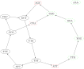

GATB
The Genome Analysis Toolbox with de-Bruijn graph
Maël Kerbiriou @ BONSAI
de-Bruijn Graph

Space-efficient and exact de Bruijn graph representation based on a Bloom filter, Rayan Chikhi and Guillaume Rizk
For bio-analysts
- $k$-mer counting: DSK, Simka multi-dataset for comparative metagenomics
- Assembly: Minia, BCALM2
- Correctors: Blooco, LoRDEC, LoRMA
- Variants: DiscoSnp++SNPs/InDels, MindTheGapInsertions
- Compression: Leon
- Integration: Pipeline & Docker container
https://gatb.inria.fr/software/
For developers
Key data structures
- de-Bruijn & Unitig Graphs
- Compact $k$-mer representation(w/ dynamic dispatch)
- Cascading bloom filters for $k$-mer sets, hash tables
- Minimal Perfect Hash Function (BBHash)
Bijective hash function: $ \textrm{Keys} \rightarrow \left[ 0,\, |\textrm{Keys}| \right[$
For developers
Application framework
- Command line arguments parser
- Sequence IO: Bank of FASTA files defined in a file of files
- Multithreading: Task dispatcher
- Reporting
GATB-liteWIP, not released
Small header-only C++ library aiming at replacing core functionality
- Compact $k$-mer representation(w/ dynamic dispatch)
- Sequence IO, emphasis on multithreading and asynchronous IO
- Job scheduler: parallel for / async / futures (M:N threading)
- Case-study: new $k$-mer counter
- LR alignement on dBG with $01^*0$ seeds
Thank you for your attention
Questions ?